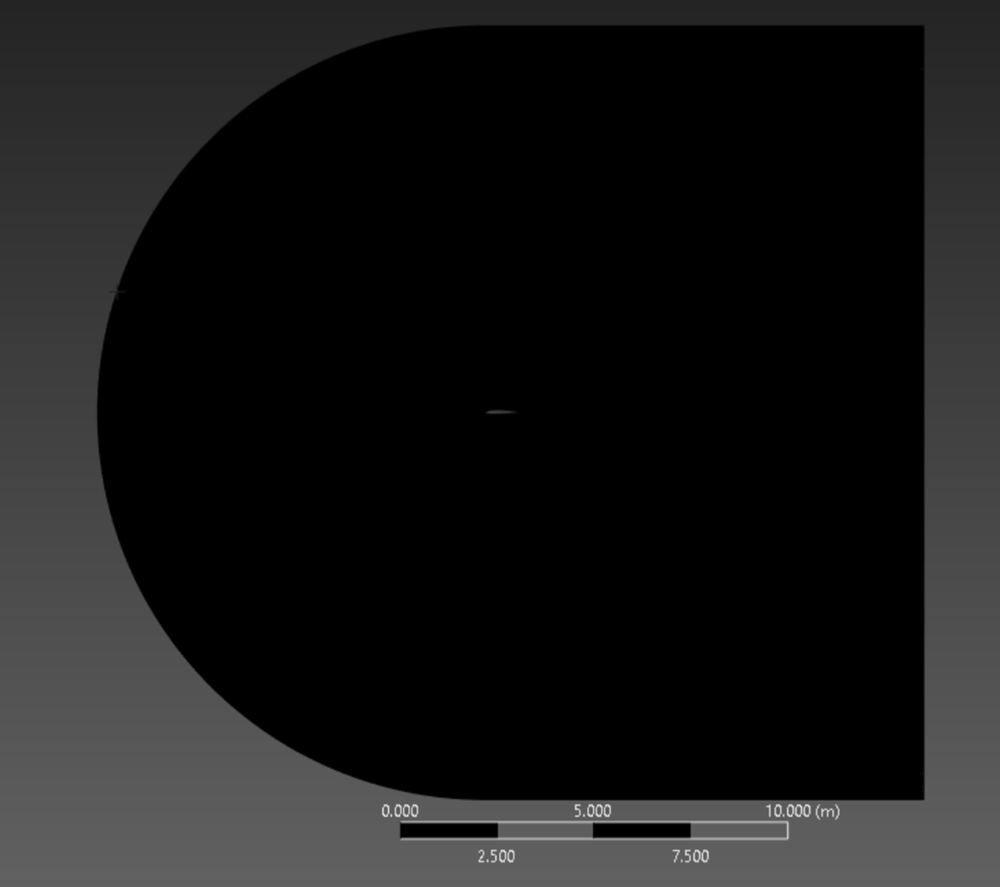

About Me
I am a highly motivated aerospace engineering master's student with a strong focus on computational fluid dynamics (CFD) in high-speed aerodynamics and reentry vehicle analysis. My expertise includes numerical simulations of hypersonic flows, turbulence modeling, and aerothermal effects, with a particular emphasis on shape parameter optimization for reentry configurations. My research and academic projects have provided me with deep insights into aerothermodynamics, mesh sensitivity analysis, and shock-wave interactions in hypersonic regimes.
In my role as a Junior Aeromechanic Engineer at the Warsaw Institute of Aviation (EDC), I have gained hands-on experience in running aeromechanical analyses using ANSYS and GageMap, processing and interpreting large datasets from experimental campaigns, and preparing certification documentation. Working in an international team, I have developed strong collaboration and communication skills, ensuring high-precision results while effectively coordinating with engineers from diverse backgrounds.
I have participated in an internship at Rocket Factory Augsburg (RFA), where I had the opportunity to further develop my skills in aerodynamics, teamwork, and working in a rapid, research-driven environment. During my time there, I contributed to solving real-world problems in rocketry, gaining hands-on experience in research and development (R&D) processes. This experience not only enhanced my technical expertise but also strengthened my ability to collaborate effectively in high-pressure situations, delivering innovative solutions to complex challenges.
As a member of the Students' Space Association - Rocketry Division, I contributed to the aerodynamic analysis of key rocket components, including the split canards of the FOK Rocket and the nose cone and fins of the GROT Rocket. This experience has sharpened my ability to optimize aerodynamic performance, troubleshoot complex simulations, and work under tight deadlines within a dynamic, team-driven environment.
My academic journey has also included practical research projects, such as my Bachelor's thesis on the aerodynamic performance of Falcon 9 grid fins across all Mach regimes. I performed detailed CFD analyses, mesh convergence studies, and post-processing in ANSYS Fluent, which deepened my expertise in high-fidelity aerodynamic simulations.
Beyond technical skills, I bring a proactive and problem-solving mindset, excellent adaptability, and a strong ability to work in interdisciplinary teams. My international project collaborations have strengthened my ability to communicate complex engineering concepts effectively. Additionally, I am highly organized, detail-oriented, and thrive in high-pressure environments that require both analytical and creative problem-solving skills.
Passionate about advancing aerospace technology, I am eager to contribute to innovative projects in spacecraft design, reusability, and aerothermodynamic optimization. Whether working independently or in a team, I am committed to continuous learning and pushing the boundaries of aerospace engineering.
Besides that, in my private time I enjoy travelling, whether it is in my close neighbourhood, Poland, or abroad. Lately I have visited Japan and South Korea, where I could observe differences between culture of western Asia and Eastern Europe. As my next trip I am planning to visit the USA and have the oportunity to watch a rocket launch in real life instead of YouTube 😅.
uRANS/LES/DES
This project wasn’t just another CFD run over a wing. I went deep—real deep—into the aerodynamic chaos zone to see what really happens when air decides to flip the script. My mission: take the classic NACA 2412 airfoil at Re=6.85×10⁶, pump three turbulence strategies (uRANS, DES, LES), and let them battle it out under full-on separation conditions. Why? To figure out who really understands vortex drama, boundary layer plot twists, and wake formation during airflow stress tests.
Here’s how I rolled:
CFD Turbulence Showdown:
- uRANS: Fast, efficient, but misses out on the wild turbulence party.
- DES: Middle ground, grabs some of the action.
- LES: The truth teller—shows every detail if your hardware can handle the heat.
Mesh Crafting:
I built every mesh from scratch. Tuned y⁺ to about 1 (for uRANS/DES), dialed it below 5 for LES. Stretched those inflation layers so wake regions hit the Taylor micro/kolmogorov scales—basically, zoomed in on the tiniest energy transfers happening in turbulent zones.
Solver Moves:
Ran a density-based scheme with CFL-driven timesteps—never let solver stability drop the beat.
Epic Aerodynamic Phenomena Observed:
- Vortex shedding: Watched air break up into swirling madness behind the airfoil.
- Boundary layer detachment/reattachment: Pinpointed exactly where the flow decided to chill or bounce back—classic aerodynamic "plot twists."
- Wake formation: Saw the birth and evolution of those wake regions, different for every model.
- Kolmogorov scale resolution: LES ran close enough to see energy cascading down to the tiniest scales—actual turbulence, not just numbers.
- Kelvin-Helmholtz instabilities: Spotted those shear layer roll-ups—major vibe in aeroacoustics and real-world drag.
- Hardware performance juggling: Ran full-second, high-fidelity LES on a classic setup; learned when to push, pause, and post-process to avoid burnout.
What I Learned:
- Turbulence strategy mastery: Know when and why each model shines (or flops)—critical for reentry vehicles, rocket separation, or any high-stakes aerodynamic drama.
- Mesh artistry: If you want to see real turbulence, you build the mesh with love and grind for those Kolmogorov vibes in separation zones.
- Boundary layer attitude: Achieving y⁺ ≈ 1 and tracking transitions gave me pro instincts for wall modeling.
- Turbulence intuition: Now, I can look at vorticity patterns and tell you when things get real—way better than trusting residuals alone.
- Smart engineering communication: Turning millions of cells and mega turbulence data into visuals and stories people actually get.
This CFD journey taught me how to own complexity, wrangle hardware, and translate raw aerodynamic data into decision-worthy insights. Ready to tackle any flow challenge, from high-speed reentry to next-gen rocket dynamics—because, in the end, it’s all about catching the real turbulence, not just the math.
uRANS, DES, and LES: Which One Tells the Truth?
This project started because I was genuinely curious about something: when airflow gets messy around an airfoil, which CFD approach actually tells you the truth? So I grabbed the classic NACA 2412, cranked the Reynolds number to 6.85 × 106, and put three different turbulence models through their paces—uRANS, DES, and LES.
The whole point wasn't just to run simulations. I wanted to see what happens when air decides to separate, swirl, and cause problems. You know, the stuff that makes engineers lose sleep when designing real aircraft.
The Real Talk Comparison:
| Model | Mesh Requirements | What You Actually See | Reality Check | When to Use It |
|---|---|---|---|---|
| uRANS | y⁺ ≈ 1 | Basic separation, averaged flow | Fast but misses details | Quick checks, early design |
| DES | y⁺ ≈ 1 | Big separation features, some dynamics | Good middle ground | When you need some detail |
| LES | y⁺ < 5 | Everything—full vortex chaos, energy cascades | The whole truth (RIP your computer) | Critical flows, research |
Building the Setup:
I spent weeks crafting meshes for each model. Got y⁺ down to about 1 for the wall-resolved stuff, pushed it under 5 for LES. Those inflation layers? Hand-tuned so I could catch the tiny energy transfers happening in the chaotic zones—we're talking Kolmogorov scale territory here. Then I fired up a density-based solver with time steps that actually made sense for the physics.
What I Actually Saw:
- Vortex madness: Real vortex streets peeling off the airfoil—not just pretty pictures, but the actual mechanisms that create drag and noise on every plane you've ever flown.
- Flow breakups: Watched exactly where the boundary layer said "nope" and detached, then tracked if and when it decided to stick back on. This stuff determines when wings stall.
- Wake chaos: Each model showed me different wake structures. LES was wild—I could literally see energy cascading from big swirls down to tiny eddies.
- Shear layer drama: Caught those Kelvin-Helmholtz roll-ups that textbooks love to mention but you rarely see in action.
- Computer battles: LES pushed my setup so hard I had to get creative with memory management and file saves. Nothing like watching your CPU temperature while chasing turbulence truth.
What Stuck With Me:
- Now I can look at a flow problem and know which turbulence model will actually work—not just pick the fanciest one.
- Developed a weird intuition for reading vorticity plots. I can spot when a simulation is lying versus when it's showing real physics.
- Got obsessed with mesh quality. If you want honest results, you build honest meshes.
- Learned that the best CFD work means nothing if you can't explain what you found to other people.
This whole experience taught me that turbulence modeling isn't just about picking settings—it's about understanding what's really happening in the flow. Whether it's a reentry vehicle hitting atmosphere or a rocket separating stages, I now know how to dig into the physics and figure out what's actually going on.
Project 01: uRANS/LES/DES Analysis
Below are the images and videos from Project 01, showcasing the uRANS, LES, and DES analysis.





Videos
Download PDF
Download Project 01 PDFproject 2
Details about project 2.


project 3
Details about project 3.


project 4
Details about project 4.


Travelling
Over the years, I have had the opportunity to explore various countries, immersing myself in their unique cultures and landscapes. Travelling has not only broadened my horizons but also deepened my appreciation for the diversity of our world.
Greece
Greece is known for its ancient history, stunning islands, and delicious cuisine.


South Korea
South Korea offers a mix of modern cities and traditional culture, with beautiful landscapes.


Japan
Japan is a land of contrasts, blending ancient traditions with cutting-edge technology.


project 5
Details about hobby project 5.


project 6
Details about hobby project 6.


project 7
Details about hobby project 7.


Bachelor Thesis: Falcon 9 Grid Fin Aerodynamics
My Bachelor thesis, titled "Aerodynamic Performance Analysis of Falcon 9 Grid Fins: A Computational Investigation", was a deep-dive CFD study into the aerodynamics of reusable rocketry. I analyzed the flow behavior around SpaceX’s Falcon 9 titanium grid fins across subsonic, transonic, and supersonic regimes, using ANSYS Fluent and the SST k-ω turbulence model.
I developed high-fidelity 2D and 3D CFD models of the grid fin mounted on the booster stage, executed mesh sensitivity studies, and extracted aerodynamic coefficients (drag, lift, moment) across multiple Mach numbers. Realistic conditions were modeled based on actual Falcon 9 reentry altitudes and speeds, and the simulations revealed valuable insights about shockwave interaction, flow separation, and boundary layer behavior.
While the simulations were limited to Mach 1.91 due to hardware constraints, I ensured full convergence and physical accuracy through optimized meshing, inflation layers, and adaptive solver control. The final results showed how the back-swept design of SpaceX's titanium fins significantly improves supersonic performance and delays wave drag onset—a key factor for reentry control.
🚀 Lessons Learned
- Mastering mesh quality: By tuning inflation layers for a y⁺ around 1, I learned firsthand how a well‑constructed mesh can dramatically improve shock capturing and solution stability in supersonic flows.
- Modeling high‑speed air: Setting up correct boundary conditions and gas properties for Mach >1 taught me the nuances of real‑gas effects and how to predict bow‑shock angles with confidence. Bow‑shock familiarity: Watching shock waves wrap around grid fins showed me the practical side of oblique‐shock theory—and inspired me to explore control‑surface interactions in highly sonic conditions.
- Deepening CFD theory: Building everything solo—from geometry cleanup to solver setup—gave me a solid grasp of turbulence models (SST k‑ω), convergence criteria, and when to trust residuals versus physical trends. Independent problem‑solving: Tackling mesh refinement, solver crashes, and post‑processing challenges alone honed my resilience—and taught me to document each step so future peers (or employers) can pick up where I left off.
- Communicating complexity: Presenting my results to faculty members sharpened my ability to translate dense CFD data into clear, actionable insights—an essential skill for any collaborative engineering environment.


Intermediate Project 2
Details about Intermediate Project 2.


Masters Thesis
Details about Masters Thesis.
Additional Project
Details about Additional Project.


DSMC
Details about DSMC project.


CFD-DSMC
Details about Hybrid CFD-DSMC workflow.


Kinetic Boltzmann
Details about Kinetic Boltzmann solver project.


ML Add-ons
Details about ML-based enhancements.